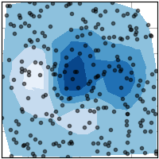

Note
Click here to download the full example code
tricontour(x, y, z) / tricontourf(x, y, z)¶
See tricontour / tricontourf.

import matplotlib.pyplot as plt
import numpy as np
plt.style.use('mpl_plot_gallery')
# make structured data
X, Y = np.meshgrid(np.linspace(-3, 3, 256), np.linspace(-3, 3, 256))
Z = (1 - X/2. + X**5 + Y**3) * np.exp(-X**2 - Y**2)
Z = Z - Z.min()
# sample it to make unstructured x, y, z
np.random.seed(1)
ysamp = np.random.randint(0, 256, size=250)
xsamp = np.random.randint(0, 256, size=250)
y = Y[:, 0][ysamp]
x = X[0, :][xsamp]
z = Z[ysamp, xsamp]
# plot:
fig, ax = plt.subplots()
ax.plot(x, y, '.k', alpha=0.5)
levels = np.linspace(np.min(Z), np.max(Z), 7)
ax.tricontourf(x, y, z, levels=levels)
ax.set(xlim=(-3, 3), ylim=(-3, 3))
plt.show()
Keywords: matplotlib code example, codex, python plot, pyplot Gallery generated by Sphinx-Gallery